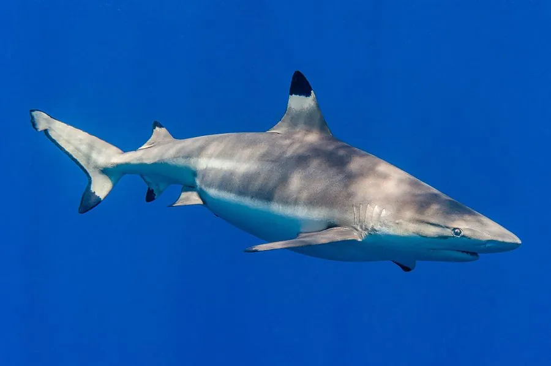

鱼类 · 动物界
黑鳍礁鲨 Carcharhinus melanopterus

印度洋与太平洋珊瑚礁浅水区最常见的小型鲨鱼，各鳍尖端呈醒目黑色，背鳍前端有一块浅色斑，常在齐腰深的水中巡游。
- 分类
- 门脊索动物门纲软骨鱼纲目真鲨目科真鲨科属真鲨属
- 栖息环境
- 热带珊瑚礁礁坪、潟湖、红树林与河口浅水，水深常不足 3 米
- 地理分布
- 印度洋与西太平洋热带海域，从东非、红海至日本南部、澳大利亚与大溪地
- 保护级别
- IUCN 易危（VU）；CITES 附录Ⅱ
物种志
黑鳍礁鲨体形修长，成年体长一般 1.0–1.6 米，最大约 1.8 米，体重 10–25 千克。背侧呈灰褐至黄褐色，腹面白色，最醒目的特征是背鳍、胸鳍、腹鳍与尾鳍下叶的尖端均为黑色，背鳍前缘下方还有一块明显的浅色长斑。吻部短而钝圆，眼小，喷水孔消失，牙呈窄三角形。
它们广泛分布于印度洋与西太平洋的热带珊瑚礁，栖息于礁坪、潟湖、红树林与河口浅水，常在不足一米深的水中巡游，背鳍露出水面。食性以鱼类、头足类、甲壳类为主，也捕食海蛇与小型鳐类。它们对温度与盐度变化耐受性强，会在潮汐驱动下在礁坪与潟湖间移动。繁殖为胎生，每胎 2–5 尾，妊娠期约 8–9 个月。由于近岸捕捞、礁区破坏与旅游干扰，其种群在部分区域下降，被列为易危物种。
形态与习性
- 体长一般 1.0–1.6 m，最大约 1.8 m
- 体重约 10–25 kg
- 食性鱼类、头足类、甲壳类，也捕食海蛇与小型鳐类
- 繁殖胎生，每胎 2–5 尾，妊娠期约 8–9 个月
- 栖息水深多在 0.5–3 m 的礁坪浅水，背鳍常露出水面
- 识别特征各鳍尖端黑色，背鳍前缘下方有浅色长斑
- 寿命约 12–15 年
趣味知识
- 黑鳍礁鲨常在齐膝深的礁坪上巡游，背鳍尖端露出水面像一面小旗。
- 它鳍尖的黑色是天然“警示牌”，在清澈浅水里格外显眼。
- 它体型不大，受惊时更倾向于迅速游走而不是攻击人。